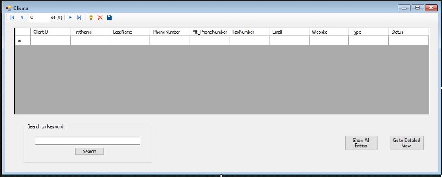
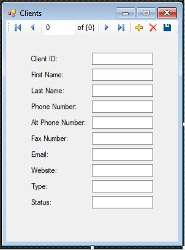
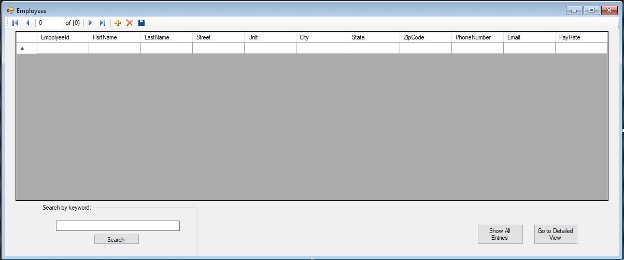
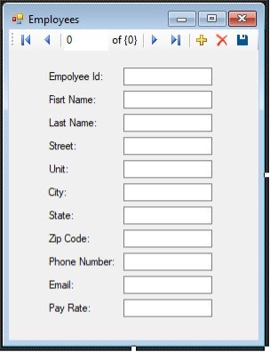
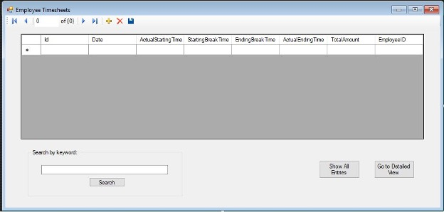
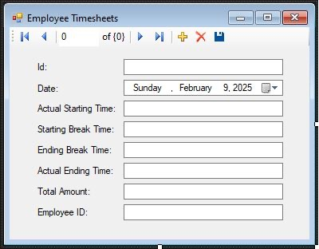
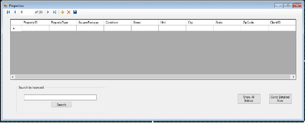
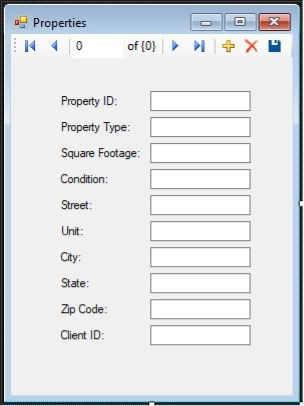

Database Overview
The database structure supports core operations such as client and employee management, service scheduling, supply tracking, and financial documentation.

This guide will help you understand how the Simply Spotless Professional Cleaning Services database works.
The database structure supports core operations such as client and employee management, service scheduling, supply tracking, and financial documentation.
When a user adds client information into the Clients table, an ID will be automatically generated for the client. The user will be able to see and work on client information both in an overall and detailed view. The default view for the Clients table is the overall view. Within the overall view, users can navigate through the client list, search for specific clients, enter information, save data entered, and delete an entry. After searching for a specific client, users can easily reset the settings to see all clients within the database by pressing the Show All Entries button.There may be times when seeing and working in a detailed view may be easier or better depending on the user preference. By pressing the Go to Detailed View button, users will be able to easily open a pop-up window that shows the detailed view of the Clients table.
Similar to the overall view, within the Detailed view users can navigate through the client list, enter information, save data entered, and delete an entry. Users can easily go back to the overall view by closing the detailed view window.
Each client is stored in the Clients table with their contact information. They are linked to one or more properties in the Properties table.
When a user adds employee information into the Employees table, an ID will be automatically generated for the employee. The user will be able to see and work on employee information both in an overall and detailed view. The default view for the Employees table is the overall view. Within the overall view, users can navigate through the employee list, search for specific employees, enter information, save data entered, and delete an entry. After searching for a specific employee, users can easily reset the settings to see all employees within the database by pressing the Show All Entries button.There may be times when seeing and working in a detailed view may be easier or better depending on the user preference. By pressing the Go to Detailed View button, users will be able to easily open a pop-up window that shows the detailed view of the Employees table.
Similar to the overall view, within the Detailed view users can navigate through the employee list, enter information, save data entered, and delete an entry. Users can easily go back to the overall view by closing the detailed view window.
The Employees table contains all personnel information including address, contact, and pay rate.
When a user adds employee hours into the Employee Timesheets table, an ID will be automatically generated for each entry. The user will be able to see and work on employee hours both in an overall and detailed view. The default view for the Employee Timesheets table is the overall view. Within the overall view, users can navigate through the employee hours list, search for specific entries, enter information, save data entered, and delete an entry. After searching for a specific entry, users can easily reset the settings to see all entries within the database by pressing the Show All Entries button.There may be times when seeing and working in a detailed view may be easier or better depending on the user preference. By pressing the Go to Detailed View button, users will be able to easily open a pop-up window that shows the detailed view of the Employee Timesheets table.
Similar to the overall view, within the Detailed view users can navigate through the employee hours list, enter information, save data entered, and delete an entry. Users can easily go back to the overall view by closing the detailed view window.
The EmployeeTimesheet table records work hours, breaks, and calculated totals for payroll purposes.
When a user adds a property into the Properties table, an ID will be automatically generated for each entry. The user will be able to see and work on property data both in an overall and detailed view. The default view for the Properties table is the overall view. Within the overall view, users can navigate through the property list, search for specific entries, enter information, save data entered, and delete an entry. After searching for a specific entry, users can easily reset the settings to see all entries within the database by pressing the Show All Entries button.There may be times when seeing and working in a detailed view may be easier or better depending on the user preference. By pressing the Go to Detailed View button, users will be able to easily open a pop-up window that shows the detailed view of the Properties table.
Similar to the overall view, within the Detailed view users can navigate through the property list, enter information, save data entered, and delete an entry. Users can easily go back to the overall view by closing the detailed view window.
The Properties table records property type, address, and condition for calculating estimated cleaning time, supplies needed, and employees needed.